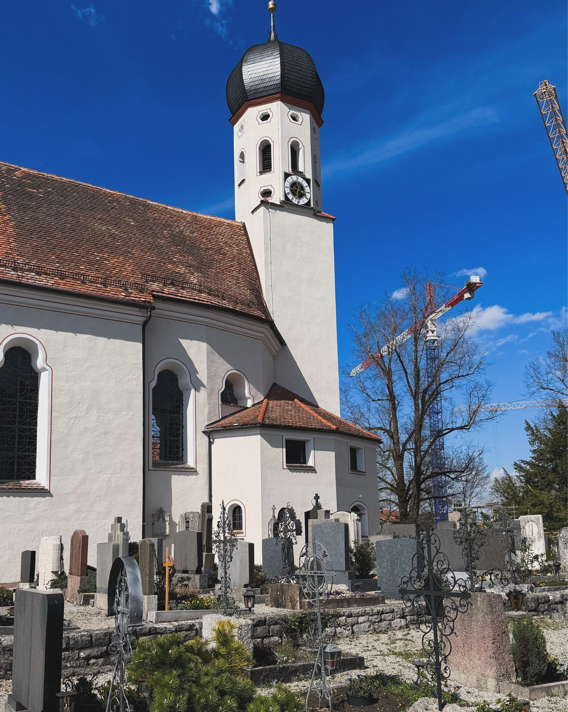
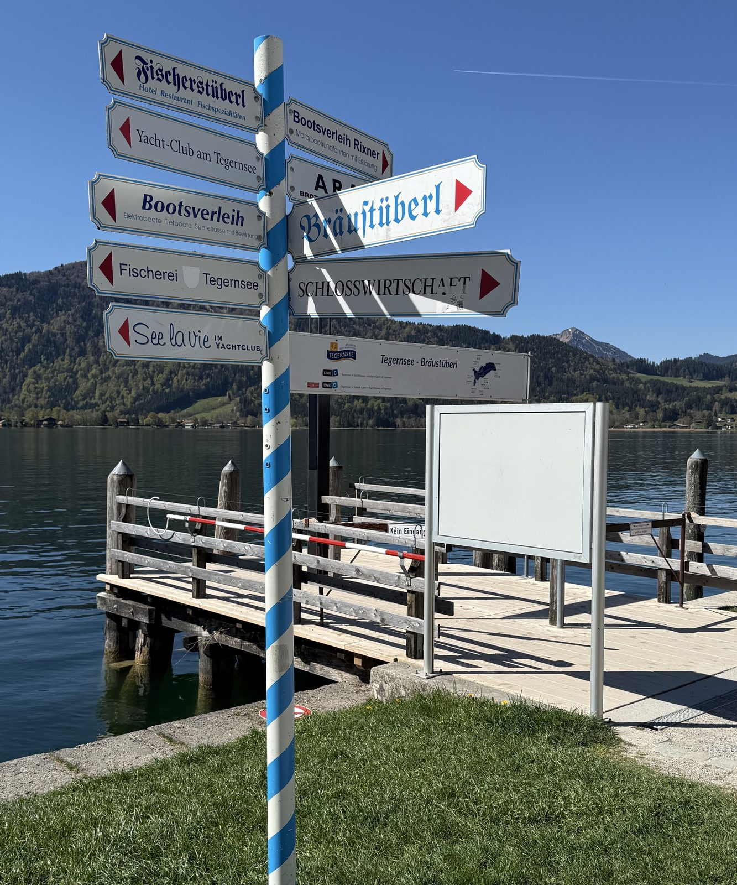
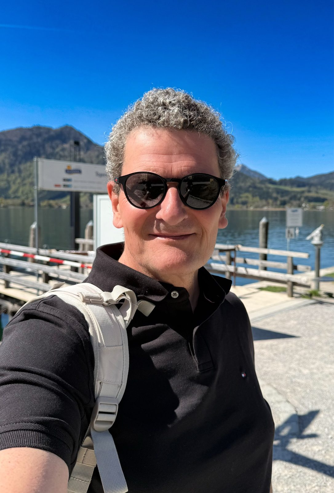
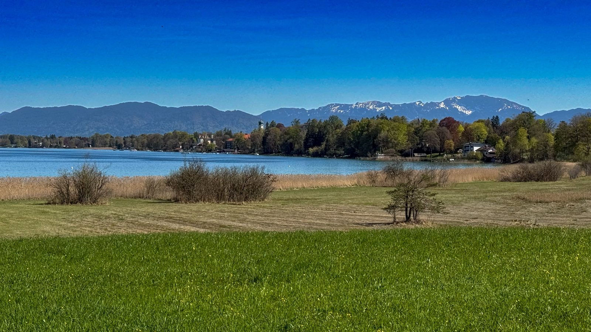
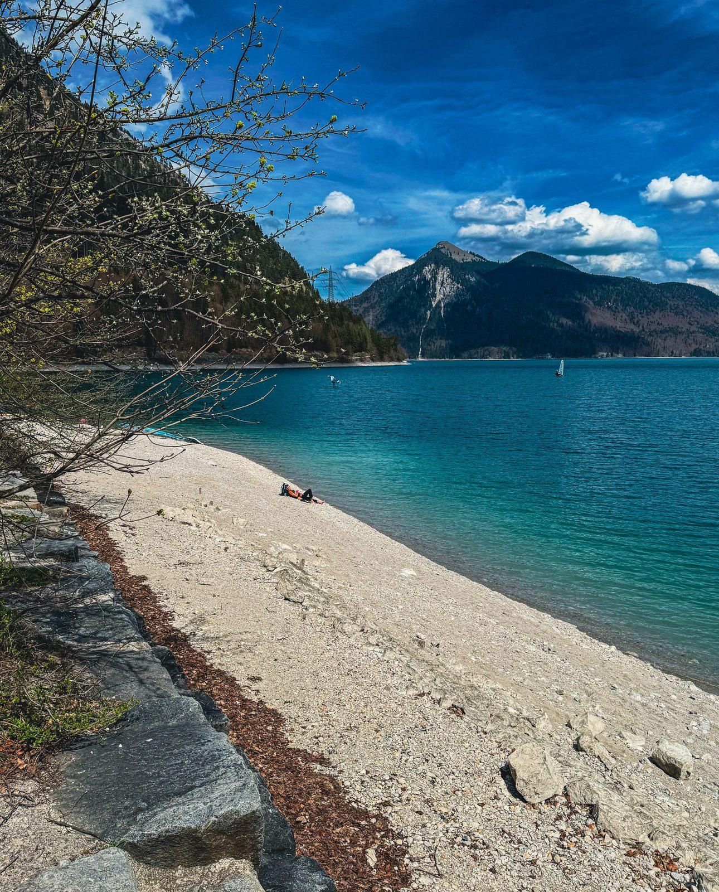
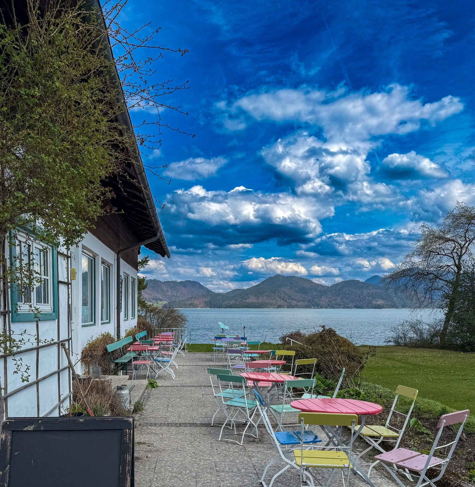
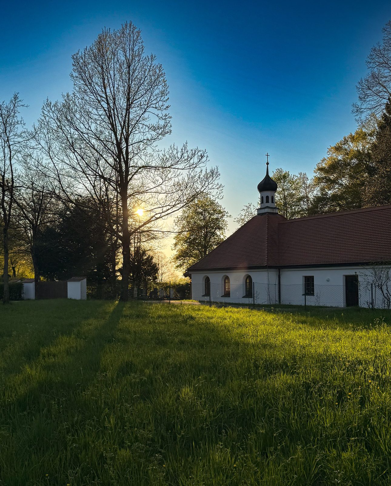
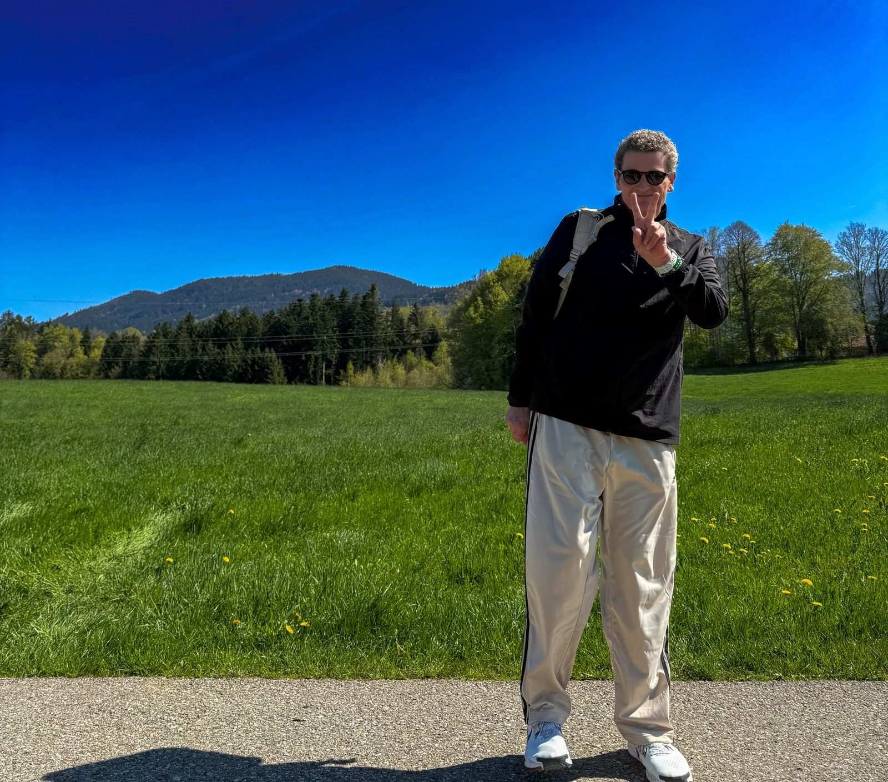

Ich stehe an einem Frühlingsmorgen auf einer Wiese im Tölzer Land. Voralpen im Dunst. Hinter mir die Kirchturmuhr, die zur vollen Stunde schlägt. Erster von zehn Tagen in Bad Heilbrunn.
Warum „Bayerisches Lakeland“?
Die Engländer haben ihren Lake District. Die Bayern haben nie einen Namen dafür erfunden. „Bayerisches Lakeland“ hab ich es genannt. Rund um Bad Heilbrunn liegen die Seen dicht beieinander. Tegernsee. Starnberger See. Walchensee. Kochelsee. Staffelsee. Alle in kurzer Reichweite. Drei davon habe ich mir angeschaut. Bad Heilbrunn liegt mittendrin. Angelpunkt eines Kompasses, dessen Nadel immer auf Wasser zeigt.
Der Ort ist seit Jahrhunderten aufs Gesundwerden spezialisiert. 1159 taucht der Weiler Heilbrunn erstmals in einer Urkunde auf, wegen der jodhaltigen Quelle. 1659 kurte hier Kurfürstin Henriette Adelheid von Savoyen. Seit 1832 heißt die Quelle Adelheidquelle. Im 19. Jahrhundert kurte man hier gegen so ziemlich alles. Heute macht das Klima die Arbeit, und ich habe es zehn Tage lang machen lassen.

Tegernsee: Wo Bayern seine Postkarten druckt
Der erste Ausflug ging an den Tegernsee. Am Anleger ein blau-weiß gestreifter Schilderbaum. Sieht aus, als hätte jemand die gesamte bayerische Gastronomie an einen einzigen Mast genagelt. Bräustüberl rechts. Fischerstüberl links. „See la vie“ auch links. Wortwitz am Wegweiser. Hier bin ich richtig.
Am Ufer ein Bootshaus aus grauem Holz. Davor Wasser so klar, dass die Kiesel am Grund aussehen wie hinter Museumsglas. Ich bin die Promenade dreimal auf und ab gelaufen und habe ins Bräustüberl hineingeschaut. Pflichtprogramm. Im ehemaligen Kloster wird seit 1675 gebraut. Am Steg das Selfie. Grinsen inklusive.



Starnberger See: Der König und das Wasser
Am Starnberger See bin ich unten am Südufer in Seeshaupt beim Gasthof-Café Seeseiten gelandet, und an dem Tag war dort fast kein Mensch unterwegs.
Ich hab mich einfach auf eine der Bänke direkt ans Wasser gesetzt und das Gesicht in die Frühlingssonne gehalten. Überall dieser frische Frühlingsduft in der Luft. Über den See hinweg der freie Blick auf die Alpen. Der Kopf war auf einen Schlag frei.
Am Ostufer bei Berg endete am Pfingstsonntag, dem 13. Juni 1886, das Leben von König Ludwig II. Wenige Tage nach seiner Entmündigung. Im seichten Wasser nahe dem Ufer. Unter bis heute ungeklärten Umständen. Ein Holzkreuz im See markiert die Stelle.
Ludwig, der Neuschwanstein in die Berge träumte. Ausgerechnet er starb in einem der friedlichsten Gewässer des Landes.

Walchensee: Ludwigs Berge, jetzt mein Lieblingssee
Die Berge rund um diesen See liebte schon Ludwig. Allen voran den Altlacher Hochkopf. Ich verstehe inzwischen auch, warum. Der See liegt 800 Meter hoch zwischen den Bergen und leuchtet türkis.
Eingekehrt bin ich im Strandcafé Bucherer, direkt am Ufer, gleich neben der Bade- und Surfwiese. Auf der Terrasse bunte Klappstühle. Rosa. Gelb. Türkis. Das Farbschema des Sees, auf Gartenmöbel übertragen. Kaffee mit diesem Blick. Jede Rooftop-Bar dieser Welt wirkt dagegen wie ein Wartezimmer.


Die Kunst des Kurierens
Zwischen den Seewochenenden: Bad Heilbrunn im Grundrauschen. Morgens eine Runde durchs Tölzer Land. Mittags noch eine Runde, mit Bergblick. Nachmittags eine Anwendung. Abends die schönste Medizin: der Spaziergang zur kleinen Kapelle am Ortsrand. Die Sonne versinkt hinter den Bäumen. Das Gras läuft golden an. Der Puls sortiert sich von allein.


Ich habe Sonnenuntergänge auf verschiedenen Kontinenten fotografiert. Der über den Voralpen kostet keinen Flug.
Bad Heilbrunn als Basis
Quartier in Bad Heilbrunn nehmen, die Seen als Sternfahrten planen. Wer surft oder kitet: Am Walchensee gibt es im Sommer verlässlich Wind aus Norden.
📍 Bad Heilbrunn auf Google MapsQuellen & Recherche
Diese Story basiert nicht nur auf eigenen Erinnerungen. Ein paar Fakten habe ich recherchiert und mit folgenden Quellen abgeglichen. Wer will, kann selbst nachlesen.
- Geschichte von Bad Heilbrunn, Gemeinde Bad Heilbrunn
- Adelheidquelle, Gemeinde Bad Heilbrunn
- Bad Heilbrunn, Wikipedia
- Herzoglich Bayerisches Brauhaus Tegernsee, Wikipedia
- Historie, Brauhaus Tegernsee
- Ludwig II. (Bayern), Wikipedia
- Tod König Ludwigs II., Haus der Bayerischen Geschichte
- Walchensee, Wikipedia
- Ludwig II. und die Berge am Walchensee, taz
- Windsurfen und Kitesurfen am Walchensee, spotnetz.de
- Gasthof-Café Seeseiten, Seeseiten 3, Seeshaupt, Gemeinde Seeshaupt
- Strandcafé Bucherer in Walchensee, Zwei-Seen-Land Kochel am See
- Standort Titelbild: Unterenzenau 2, OpenStreetMap